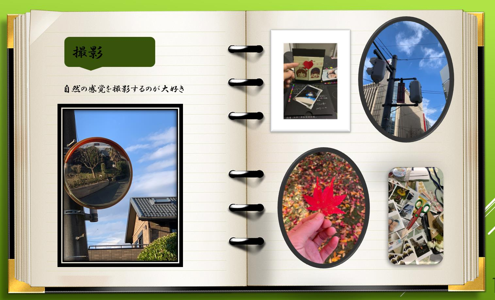
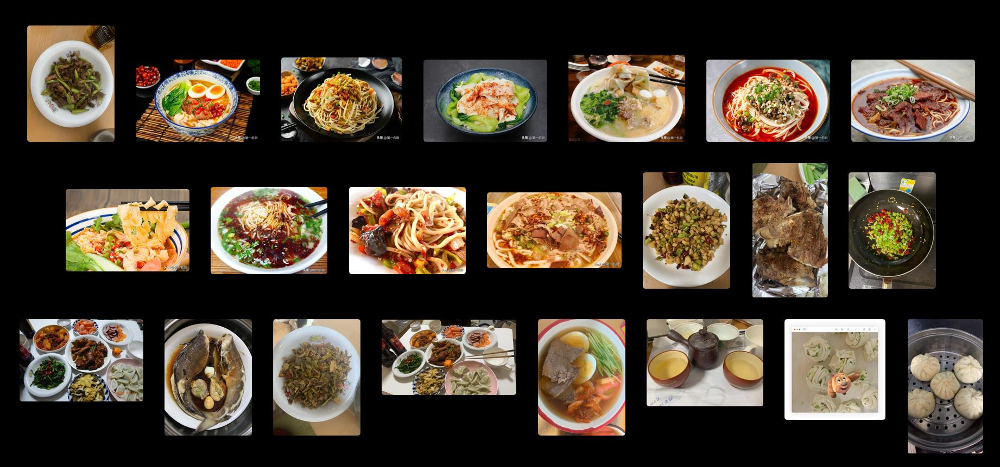
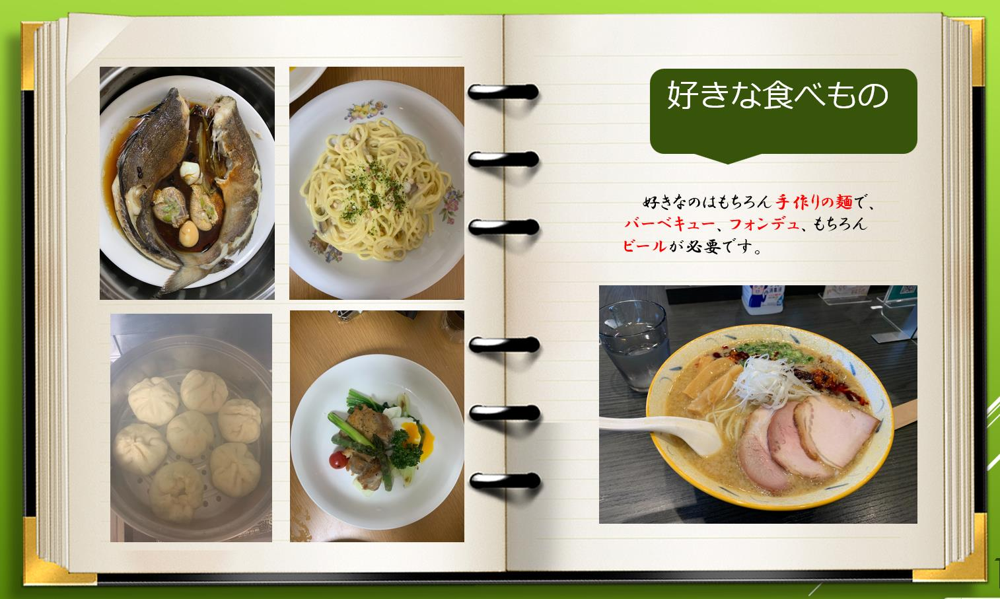
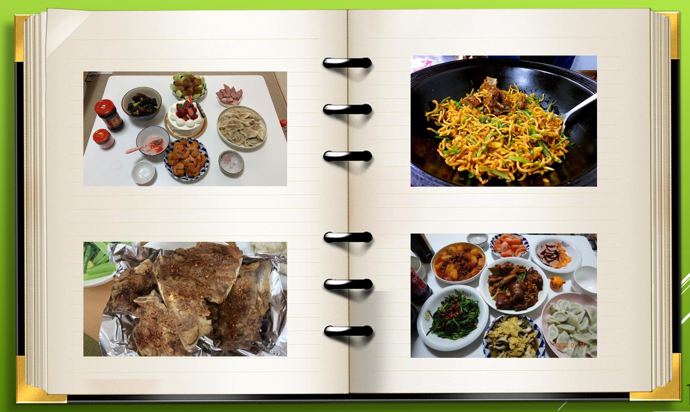
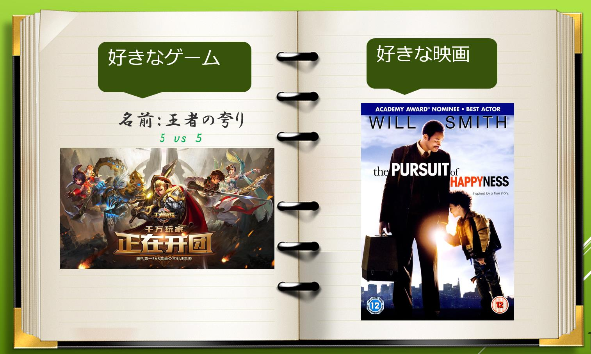
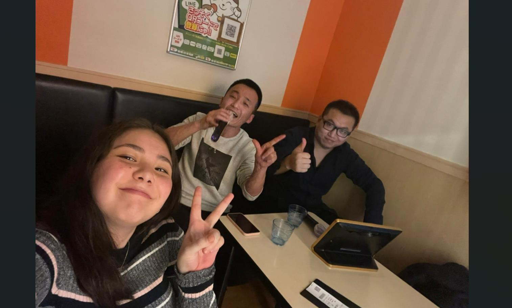
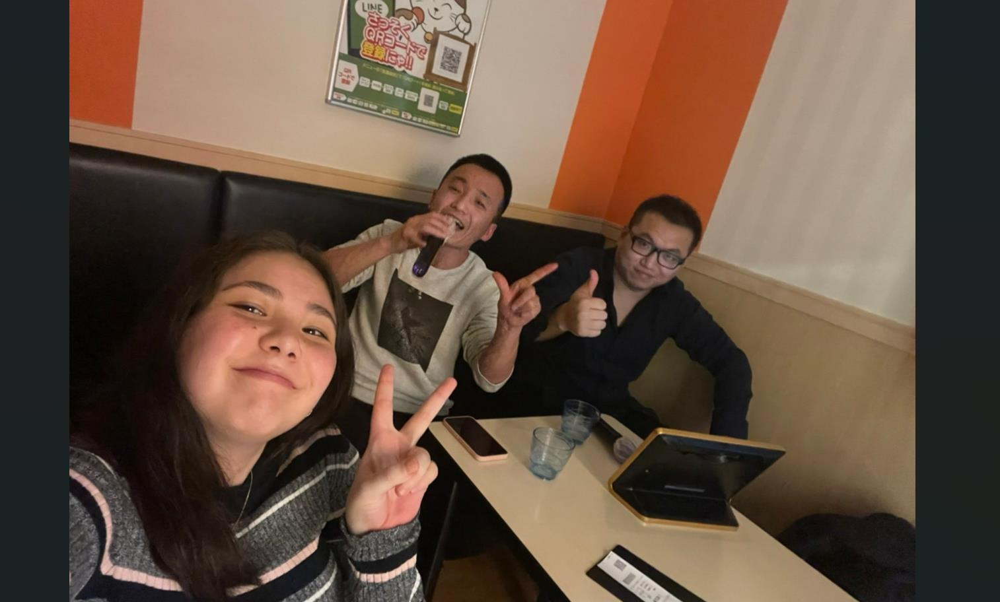
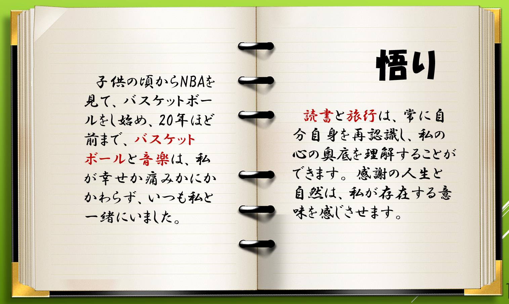

第一編 スポーツ
スポーツは体と心の健康を保つ重要な手段です。私はランニング、バスケットボール、サイクリングが好きです。
【最後まで、希望を捨てちゃいかん、諦めたら、そこで試合終了だよ。】、この言葉は私が学生時代に「Slam Dunk」という作品で耳にしました。 このフレーズが私のバスケットボールへの情熱の理由であり、同時に新たな挑戦に興味を持つようになったきっかけでもあります。
バスケは子どもの頃からやっているのですが、大人になってからはバスケをすることで、いいリフレッシュになっています。 私はよくチーム内で「ポイントガード」または「シューティングガード」のポジションでプレーします。今も週末は日本人の友だちと一緒にバスケをしています。
第二編 手作り など
北京にいたときは、よく骨董市に行きました。そこにはとても面白い商品がたくさんあります。その商品を参考に自分が好きなブレスレットや文房具を作っています。
第三編 写真
私は暇な時間に、携帯電話で写真を撮ることが好きです。例えば食事を終えて散歩中に、 私は好きな瞬間を記録します。特に朝日や夕日が昇る瞬間が大好きで、青い空と白い雲、そして北海道の雪も好きです。。。

第四編 食べ物探求
私はとてもグルメです。様々な料理を食べてみて、さまざまな味と風味を楽しむのが好きです。
私は食べることが大好きで、たくさん食べてきましたが、中でも一番好きなのはラーメンです。 中国にいたとき、どこに行っても地元の特色ある軽食や麺料理を知るようにしていました。中国にはおそらく少なくとも10種類以上のラーメンがあり、私自身も7、8種類以上を試した記憶があります。その中でも一番好きなのは蘭州ラーメンで、次に北京のジャージャー麵です。日本に来てからも、たくさんのラーメンを試しましたが、どれも非常に美味でした。

休暇の時には、簡単な料理も自分で作ります。以下は今年の新年に作ったものです。
 
第五編 ゲームと 映画 の世界
冒険と挑戦を求めてゲームの世界で遊ぶのが好きです。
高校時代はCS(Counter-Strike)が好きで、大学に入ってからはルームメイトと一緒にCrossFireをプレイしました。現在は主に王者栄耀をプレイしています。
現実の生活とゲームの世界は違います。毎日が思い通りにいかないこともあります。困難に直面したり、気分が乗らないときでも、私はいつもthe PURSUIT of HAPPINESS を見て自分を奮い立たせ、自分の状態を整えて前進しています。

第六編 歌を歌う
音楽が大好きで、暇な時間に歌を歌うことが好きです。気持ちをリフレッシュするためです。
普段は友達と一緒に焼肉を食べに行ったり、食後に一緒に歌ったりもします。
 

終編 感慨
寝る前に良い本を読むのが良いと思います。それ以外、「自らを省みる」常にこの言葉を心がけております。
毎日の三省吾身(毎日、自分の行いについて反省すること)は難しいですが、定期的に自己反省をすることは重要です。これによって同じ過ちを犯すことを避けることができます。
